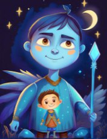

Блазень

Мотивація: прожити яскраве життя
Страх: бути нецікавим, нудьга
Сильні сторони: почуття гумору
Слабкі сторони: несерйозність, уникнення відповідальності
Стратегія: отримання уваги через яскраві образи та емоції
Блазень - це головний веселун у будь-якій компанії. За допомогою гумору, підколів та розіграшів цей тип налаштовує оточуючих на позитивний лад. Поруч із блазнем рідко буває нудно, він вміє створити атмосферу свята та розважати інших. Темна сторона блазня часто проявляється у чорному гуморі та підколах. У стресі блазень втрачає свій оптимізм, на зміну якому приходить похмурий реалізм і розлюченість на світ. В такому стані блазень може нацьковувати інших один на одного заради забави, плести інтриги. Може вести розпусний спосіб життя і втратити весь свій колишній оптимізм.
Славний Малий

Мотивація: бути гідною частиною суспільства
Страх: виділятися серед натовпу
Сильні сторони: простота, надійність
Слабкі сторони: бажання відповідати очікуванням
Стратегія: бути своєю людиною в будь-якій компанії Славний малий - своя людина в будь-якій компанії. З ним просто порозумітися і в спілкуванні швидко складається враження ніби знав цю людину все життя. Цьому типу важливо як до нього ставляться інші, тому він постійно заклопотаний тим, щоб подобатися людям та відповідати очікуванням інших. Славний малий – у стресі часто сумнівається у собі та втрачає впевненість. Найгірше для нього – це втратити прихильність своїх товаришів і опинитися у центрі скандалу чи конфлікту. У такій ситуації він робитиме все, щоб відновити своє добре ім'я. Без свого оточення славний малий швидко чахне і може втратити інтерес до навколишнього світу. Відновитись допоможе тільки контакт з людьми.
Чаклун
Мотивація: здійснити свої мрії, вийти на новий рівень
Страх: нашкодити своїми діями оточуючим
Сильні сторони: вміння бачити сховані тенденції, інтуїція
Слабкі сторони: дистанція у комунікації
Стратегія: бачити те, що недоступно іншим, відкривати таємні знання
Чаклун - один із найзагадковіших архетипів. Часто під час контакту з ним складається враження, що ти контактуєш із чимось неземним, не до кінця зрозумілим і по-доброму дивним.
Маги з легкістю помічають приховані тенденції та підводні каміння у будь-якому спілкуванні. Часто це сірі кардинали, що діють за інтуїцією та через інших людей. Чаклун у стресі, так само як і мудрець, може занурюватися глибоко в себе і досліджувати причинно-наслідкові зв'язки подій.
Часто маги почуваються 'поза тусовками' і не на своєму місці: сумнівається у собі і є відчуття неприйняття іншими, почуття самотності у натовпі. Можуть бути мстивими та маніпулятивними.